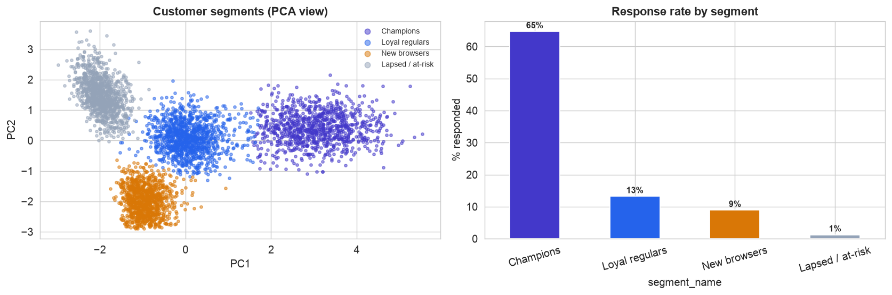
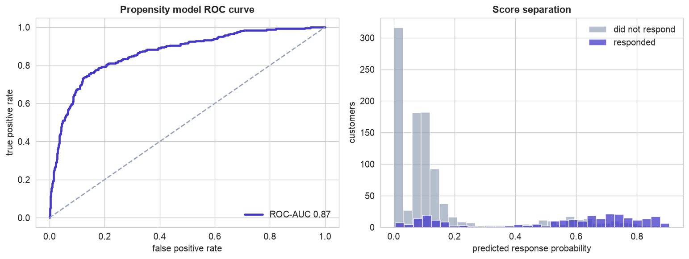
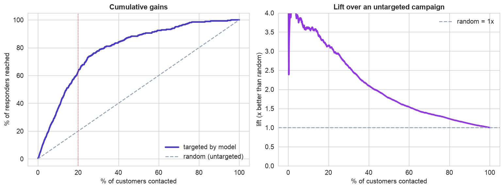
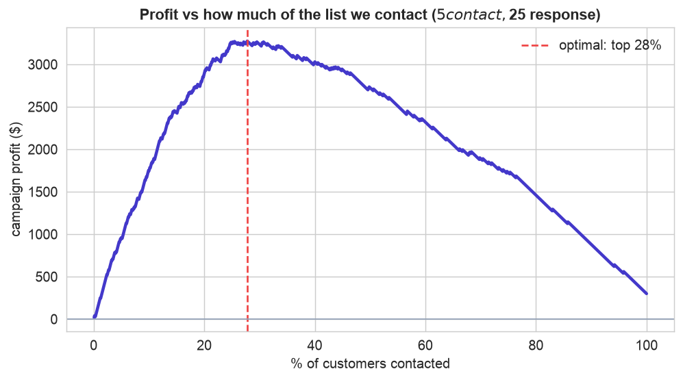
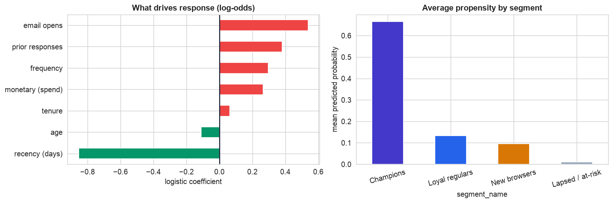

Marketing is a budgeting problem. You cannot profitably contact everyone, so the question is who. This chapter answers it with both kinds of machine learning at once: unsupervised clustering to understand the customer base as a few natural segments, and supervised modeling to score each customer's chance of responding, and it judges the result the way a business does, by lift and profit over an untargeted campaign.
Unsupervised learning (Step 6) tells you who your customers are; supervised learning (Step 8) tells you which ones to act on. Targeting is where they meet, and the gains and ROI curves (Steps 9-10) turn the model into a contact list and a profit number.
The 12-Step Method
The same repeatable loop, now spanning both unsupervised and supervised learning. The companion notebook runs all twelve steps; the sections below tell the story and show the plots.
One row per customer with the RFM trio, recency_days,
frequency, monetary, plus tenure_months, email_opens_90d,
prior_responses, age, and the target responded (did they respond to the last
campaign). 4,200 customers, about 21% responders.
Define, Collect, Inspect, Clean (Steps 1–4)
Define the objective
Two goals: understand the customer base as a few meaningful segments, and act by contacting the customers most likely to respond. Success is measured in profit, more responses per dollar than a blanket mailing, not in raw accuracy.
Collect the data
A customer table exported from the CRM, one row per customer, carrying the RFM trio marketers rely on plus a few engagement signals and the outcome of the previous campaign.
Inspect the data
About 21% of customers responded last time, that is the untargeted baseline: contact a random person and roughly one in five responds. The entire point of targeting is to beat that per-contact rate. A few missing values and duplicates need a quick clean.
Clean the data
| Problem | Detail | Fix |
|---|---|---|
| Duplicates | 30 repeated customer_id | deduplicate |
| Missing values | 41 monetary, 25 age | impute in each pipeline (train only) |
After deduping, 4,200 customers remain. The missing values are left for the clustering and modeling pipelines to impute, so nothing leaks.
Segment the Customers (Steps 5–6)
Visualize the RFM landscape
The distributions are skewed, most customers are low-frequency and low-spend, with a long, valuable tail, and response climbs steeply with email engagement. That heterogeneity is why a single average is useless, and why we segment before we model.
Segment with clustering (unsupervised)
K-means on the standardized RFM and engagement features finds four clear groups. Profiling their averages lets us name them, and the response rate turns out to swing enormously across them.

Four customer types, discovered without labels. Left, the customers projected onto two principal components, colored by segment, four distinct clouds. Profiling names them: Champions (recent, frequent, high-spend, engaged), Loyal regulars, New browsers, and Lapsed / at-risk. Right, and this is the payoff of segmenting: response rate ranges from about 1% for the lapsed group to 65% for Champions. Who a customer is already says a great deal about whether they will respond.
The silhouette score gently favors fewer clusters, but four is the actionable choice, each maps to a distinct, nameable customer a marketer can plan around. A useful reminder that the number of clusters is often a business decision, not purely a statistical one.
Score and Target (Steps 7–9)
Split, then score (supervised)
Segmentation grouped everyone; now a supervised propensity model scores each customer's probability of responding, holding out 30% of customers to judge the targeting honestly. A logistic model earns a ROC-AUC around 0.87, we do not need a perfect classifier, only a good ranking.

A reliable ranker. Left, the ROC curve sits well above the diagonal (AUC 0.87): the model scores responders higher than non-responders far more often than chance. Right, the score separation, responders (indigo) pile up at higher predicted probabilities than non-responders (grey). For targeting, this ordering is all we need.
Target by rank: gains and lift
Rank customers by propensity and contact the top of the list first. The gains and lift curves show exactly how much targeting buys.

Why targeting works. Left, the cumulative gains curve bows far above the diagonal: contacting the top 20% of customers by score reaches about 63% of all responders, more than three times what a random 20% would reach. Right, the lift curve says it directly, the best-scored customers are about 3x likelier to respond than a random pick, with lift falling toward 1x as you work down the list. The campaign captures most of the value from a fraction of the contacts.
ROI, Interpret & Deploy (Steps 10–12)
Put dollars on it
Lift is compelling, but the decision is financial: how far down the ranked list is it still profitable to contact?

The profit curve names the number. With each contact costing $5 and each response worth $25, a customer is worth reaching only if their response probability clears 1 in 5. Profit rises as we work down the ranked list, then falls once we start paying to reach unlikely responders. The peak, contacting roughly the top 25-28%, earns about ten times the profit of blasting everyone (which barely beats doing nothing). Targeting turned a marginal campaign into a clearly profitable one.
Interpret: the two halves meet
The propensity model and the segments tell one coherent story.

Who responds, and where the value sits. Left, the response drivers: email engagement, prior responses, frequency, and spend raise the odds, while high recency (a dormant customer) lowers them. Right, averaging the propensity score within each segment closes the loop, Champions carry by far the highest average propensity, Lapsed the lowest. The unsupervised segments and the supervised scores agree, and together they tell the marketer not just whom to contact but why.
Deploy on new data
Saved as joblib pipelines, the segmenter and propensity model turn a new customer record into an action
in one pass: assign a segment, compute a response probability, and contact only if
the expected value (probability times response value) beats the contact cost. A Champion-like customer scoring 79% is
an obvious contact; a lapsed one scoring 1% is not worth the postage. In production the base is scored regularly, and,
crucially, an untouched holdout control group lets the team measure the campaign's incremental
lift, the true test of whether targeting paid off. The Operationalizing the Model (MLOps) case study covers running this in production.
Communicate: the Plain-English Write-Up (Step 12)
For a non-technical reader
What is this? We built a tool that helps a marketing team spend its campaign budget wisely: it groups customers into a few easy-to-understand types, and it ranks everyone by how likely they are to respond, so the team contacts the most promising people first.
What goes in, and what comes out
Inputs: the customer information the company already has, how recently and often each person buys, how much they spend, how long they have been a customer, how much they engage with emails, and whether they responded before. Outputs: a segment label (which customer type they are) and a response probability (their chance of responding), which becomes a "contact / don't contact" decision.
The decisions we made, and why
- ✓We grouped customers into four types ("Champions," "Loyal regulars," "New browsers," "Lapsed") because a handful of clear groups is something a marketing team can actually plan around, and their response rates differ hugely, from about 1% to 65%.
- ✓We scored every customer individually for their chance of responding, and ranked the whole base from most to least promising, so the campaign works down the list.
- ✓We decided how many to contact using money, not a gut feel: since each contact costs a little and each sale is worth more, we found the cutoff where contacting one more person stops being profitable.
How good is it, in plain terms
Contacting just the top fifth of customers reaches about two-thirds of everyone who would respond, roughly three times better than mailing a random fifth. Choosing the profit-maximizing cutoff (about the top quarter of the list) earns far more than mailing everyone, which barely breaks even.
The big idea
Two kinds of analysis worked together: one found the natural customer groups (who your customers are), the other scored who is worth contacting (which ones to act on). Put simply: smart targeting turned a break-even campaign into a clearly profitable one, and a small untouched "control" group can prove the extra sales really came from the targeting.
Run the entire project in Python
The companion notebook is the full 12-step pipeline: it loads and cleans the customer table, visualizes the RFM landscape, clusters customers into named segments, builds a supervised propensity model, draws the gains and lift curves, computes the ROI profit curve to choose how many to contact, interprets the drivers and where the value sits, and scores a new customer, with every table and chart explained.
View opens the rendered notebook instantly.
Open in Colab runs it live. To run locally, install numpy, pandas,
matplotlib, seaborn, and scikit-learn.
🎓 Key Takeaways
- ✓Segment first (unsupervised): K-means on RFM + engagement found four nameable customer types with response rates from about 1% to 65%.
- ✓Score next (supervised): a propensity model (ROC-AUC about 0.87) ranks each customer's chance of responding.
- ✓Target by rank: the gains curve shows the top 20% of customers hold about 63% of responders, roughly 3x lift over random.
- ✓Decide by ROI: with cost and value per contact, the profit curve picks the optimal fraction (about the top 25%), far beating a blanket campaign.
- ✓Combine both, and prove it: segments explain who and why, propensity decides whom to contact, and a holdout control proves the incremental lift.
Take It Further
Five ways to extend the project in the notebook:
How many segments?
Use the elbow and silhouette together to justify the number of clusters.
A gradient-boosting propensity model
Does a flexible model build a better contact list? Compare the gains curves.
Are the scores calibrated?
The ROI math multiplies probability by value, so check that a "20%" really responds 20% of the time.
calibration_curve(y_test, prob).When to target more or less
Sweep the contact-cost to response-value ratio and watch the optimal fraction shift.
Build the contact list
Given a budget of N contacts, produce the campaign list and forecast the responses.
All five, worked in a companion notebook
A second notebook, Take It Further, rebuilds this chapter's model and works every one of these five extensions with visuals and explanations, choosing the number of segments, a gradient-boosting rival, a calibration check, a cost-to-value sensitivity sweep, and building an actual contact list under budget, closing with a plain-English summary.
Quiz: Test Yourself
Eight questions on segmentation and targeting. Answer them, hit Check Answers, and keep refining until you score 100%. Your progress is saved, so you can hop back to the chapter and return anytime.
We have targeted the willing; next we assess the risky. Loan Default Risk takes a messy credit dataset the whole way, cleaning and feature engineering, model comparison, interpreting predictions with SHAP, and a fairness check across groups.